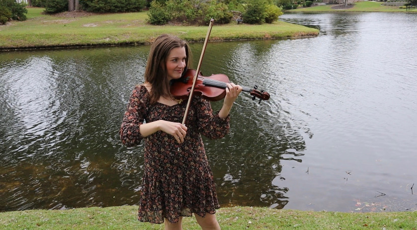

Mallory Phillips received her Master of Music in Violin Performance from the University of North Carolina at Greensboro, studying with Fabian Lopez. She received a graduate assistantship, which involved playing in the Graduate Honors Quartet and working as a teaching assistant for undergraduate music courses. She holds a Bachelor of Music degree, with a major in Violin Performance, from Converse College where she studied with Sarah Johnson, a first-generation student of Ivan Galamian. She attended Converse on the Paddison Music Scholarship, a full comprehensive scholarship, and she graduated summa cum laude and received the Distinction in Performance, an honor given to one music student that is awarded unanimously by the music faculty.
She regularly plays as a section violinist in the North Carolina Symphony and has previously been a section violinist with the Winston-Salem Symphony, Greensboro Symphony, a substitute violinist for the Charlotte Symphony, and was the Principal Second Violin of the Spartanburg Philharmonic Orchestra for the 2014-15 and 2015-16 seasons. She performed as First Violinist in a group with renowned cellist Lynn Harrel during his residency at UNCG in 2018, performing Brahms Clarinet Quintet. She was a featured soloist with the Spartanburg Philharmonic Orchestra in December 2015 and was named the 2015 Presser Scholar in recognition of outstanding achievement as a music major at Converse College. She won the 2013 Greater Anderson Musical Arts Consortium Concerto and the 2013 Converse Symphony Orchestra concerto competition, performing the first and second movements of the Barber Violin Concerto, respectively, with the orchestras. She won the Music Teachers National Association South Carolina State competition in the Young Artist Strings category in 2014 and 2015, going on the compete in the Southern Division competition.
Mallory has studied and performed in masterclasses with esteemed artists and pedagogues such as Charles Castleman, Mimi Zweig, Aaron Berofsky, James Lyon, Benjamin Sung, Will Fedkenheuer, Janet Sung, Rebecca McFaul, Jonathan Kramer, Vadim Gluzman, Carolyn Huebl, Amy Schwartz Moretti, Violaine Melancon, Stefani Matsuo (concertmaster of the Cincinatti Symphony Orchestra), and Paul Kantor. She has also worked with members of notable string quartets such as the Penderecki Quartet, the Juilliard Quartet, the Beo Quartet, the Shanghai Quartet, the Borromeo Quartet, and the Fry Street Quartet. She received a full scholarship to attend the 2014 Brevard Music Center Festival, performing in the Brevard Music Center Orchestra side by side with renowned concertmasters and musicians Bill Preucil, David Kim, Noah Bendix-Bagley, and accompanying world renowned soloists, most notably Itzhak Perlman. In the summer of 2019, Mallory attended the Spoleto Festival in Charleston, SC, as a violinist in the Spoleto Festival Orchestra.
In addition to Mallory’s active performing career, she has also kept up an active violin studio, teaching at the Lawson Academy of the Arts in Spartanburg, SC from 2014-2016, and privately out of her home for the past 8 years. She has also led numerous college and high school level violin sectional rehearsals, including violin sectionals for the Senior High School Orchestra at UNCG Summer Music Camp in 2019, where she was a counselor and rehearsal assistant, the UNCG Symphony Orchestra, and the Converse Symphony Orchestra, and working as a regular sectional coach with the Triangle Youth Symphony.